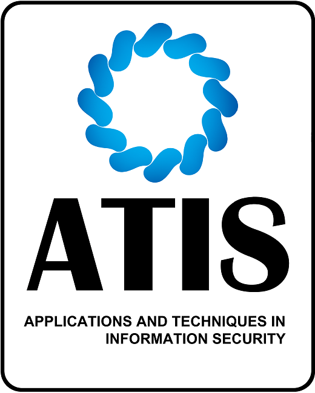

Embedded systems Internship at L&T Technologies Ltd
 Currently working on developing automated scripts to automate tasks on internal websites. Upcoming projects in embedded systems software focusing on hardware-software integration.
Currently working on developing automated scripts to automate tasks on internal websites. Upcoming projects in embedded systems software focusing on hardware-software integration.
Systems Reliability Internship at Nutanix Inc.
Played a key role in troubleshooting cloud infrastructure issues, delivering technical support, optimizing system performance, and enhancing the user experience on Nutanix clusters.
Computer Vision Internship at Siemens Ltd.
 Developed a real-time code solution for a camera on the Siemens shopfloor, using OCR and Tesseract to identify and convert serial numbers into text. Integrated Microsoft PowerApps to seamlessly transfer the extracted data for further processing and analysis.
Developed a real-time code solution for a camera on the Siemens shopfloor, using OCR and Tesseract to identify and convert serial numbers into text. Integrated Microsoft PowerApps to seamlessly transfer the extracted data for further processing and analysis.
Teaching Assistant for CS1122 - Introduction to Computer Science and Programming
 Supported course delivery in Linux, search engines, information retrieval, data science, and agile software by leading discussion sections, managing course materials, and assisting students with course content and projects.
Supported course delivery in Linux, search engines, information retrieval, data science, and agile software by leading discussion sections, managing course materials, and assisting students with course content and projects.
Web Developer for ATIS 2022 Conference
 Collaborated with Professor Gang Li from Deakin University, Australia and Professor Srikanth Prabhu from Manipal Institute of Technology, India to design and develop the official website for the Applications and Techniques in Information Security (ATIS) 2022 Conference.
Upcoming Teaching Assistant for CS3083 - Database Systems
 Going to assist Prof. Salim Arfaoui in grading assignments and exams, conducting SQL lab sessions, and providing additional tutoring for students needing extra help.
Going to assist Prof. Salim Arfaoui in grading assignments and exams, conducting SQL lab sessions, and providing additional tutoring for students needing extra help.
Data Science Internship at Invenger Technologies
 Engaged in data analysis and machine learning projects, particularly the optimization of Electrocardiogram signal classification using residual neural networks (ResNets).
Engaged in data analysis and machine learning projects, particularly the optimization of Electrocardiogram signal classification using residual neural networks (ResNets).